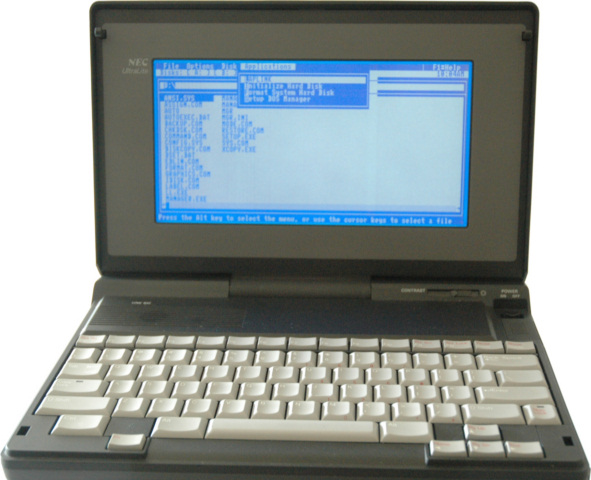

Shole’s Lives On
"One of the nineteen inventions generally considered greatest in modern times, the typewriter has won for itself an indispensable place in the world's work."
- Arthur Toye Foulke
1989 - Laptop or Portable Personal Computer?
The first traditonal notebook-style laptop NEC UltraLite in 1989 with a QWERTY keyboard. The first truly portable system that wasn't over 10 lbs. They computer didn't do anything other than compute. It used ROMS and very little storage. It used ROM cards to run progams for users and was very useful for those who had the mony to purchase this $4000 machine (before inflation).
1991 - The Short Life of the Personal Data Assistant
 Hewlett-Packard released the HP95LX PDA in 1991 in order to have a more compact personal computer system that could email, open and write documents, and more. It was the second part to the modern day smart phone that the cellular phone at the time wasn't able to achieve. Although they were not powerful enough to do much of anything, people still used them for the portability and size. And the need for a laptop didn't seem necessary for the average consumer. Over time other PDA's were made, but none achieved the level of success the smart phone reached.
Hewlett-Packard released the HP95LX PDA in 1991 in order to have a more compact personal computer system that could email, open and write documents, and more. It was the second part to the modern day smart phone that the cellular phone at the time wasn't able to achieve. Although they were not powerful enough to do much of anything, people still used them for the portability and size. And the need for a laptop didn't seem necessary for the average consumer. Over time other PDA's were made, but none achieved the level of success the smart phone reached.
2007 - Our Past's Future
 Apple released their most important product, the iPhone, June 29, 2007. It made waves and is regarded as the first smart phone. It uses the QWERTY Keyboard using Apple's patented and proprietary technology in their screens and it was very viable for any consumer. It was the future of technology and continues to innovate. The power these machines had over other phones was remarkable. Today, Apple is continuing to innovate by making their own proprietary computer chips for their phones, tablets, and computers. The iPhone today is dying, but Apple will make their comeback very soon.
Apple released their most important product, the iPhone, June 29, 2007. It made waves and is regarded as the first smart phone. It uses the QWERTY Keyboard using Apple's patented and proprietary technology in their screens and it was very viable for any consumer. It was the future of technology and continues to innovate. The power these machines had over other phones was remarkable. Today, Apple is continuing to innovate by making their own proprietary computer chips for their phones, tablets, and computers. The iPhone today is dying, but Apple will make their comeback very soon.
2019 - Folding Screens are the Future
 Lenovo announced 2019 that they will be implementing the new foldable screen technology in the X1 Foldable. Like with other mobile devices, it will carry the QWERTY keyboard virtually and allow for an external keyboard. It is the direction technology is currently moving. Our Personal computers used to be thick and heavy, two part systems with a screen and a computer. Now the screen, computer, and keyboard are integrated into one machine. Almost like a tablet, but much, much stronger. In the past, we were seeing thinner and thinner monitors and televisions. Now we are seeing where that thinness can take us with folding since it's the only direction for creators to create next. This technology may take away the physical keyboard, but it will never take away the need for an input device for the user. It is the most important part of the computer, the user input.
Lenovo announced 2019 that they will be implementing the new foldable screen technology in the X1 Foldable. Like with other mobile devices, it will carry the QWERTY keyboard virtually and allow for an external keyboard. It is the direction technology is currently moving. Our Personal computers used to be thick and heavy, two part systems with a screen and a computer. Now the screen, computer, and keyboard are integrated into one machine. Almost like a tablet, but much, much stronger. In the past, we were seeing thinner and thinner monitors and televisions. Now we are seeing where that thinness can take us with folding since it's the only direction for creators to create next. This technology may take away the physical keyboard, but it will never take away the need for an input device for the user. It is the most important part of the computer, the user input.